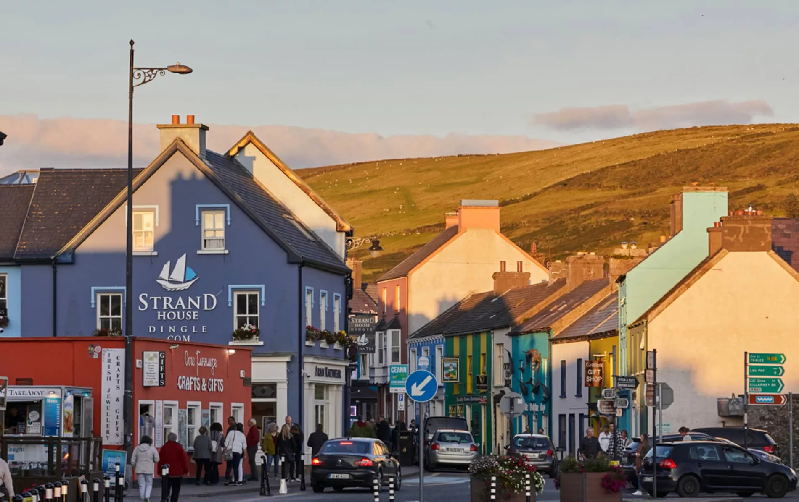
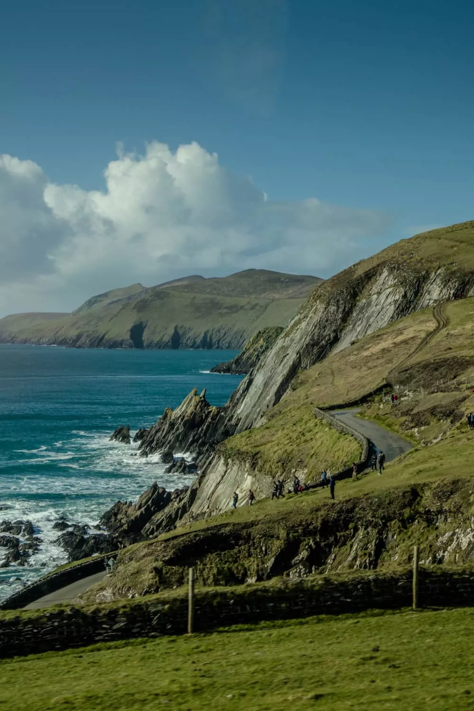
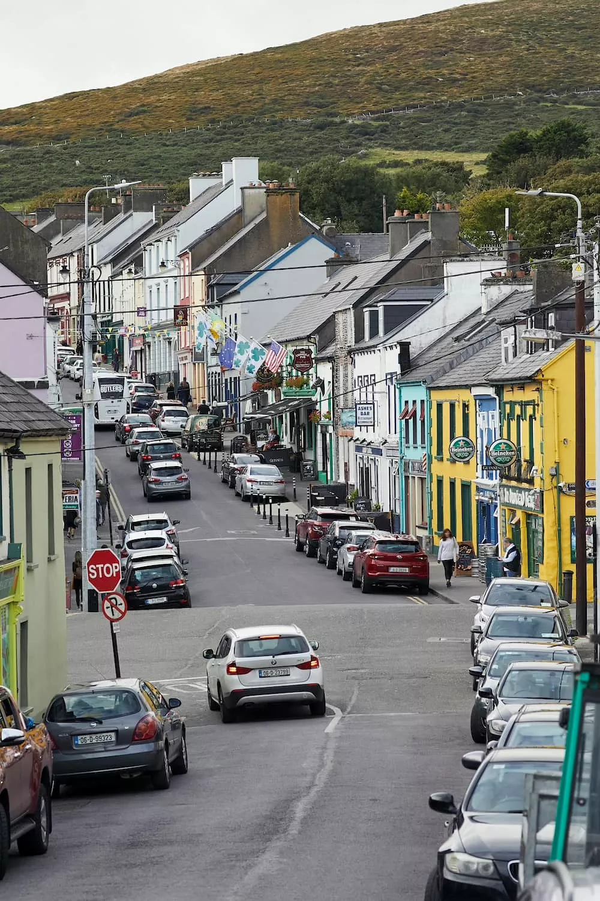
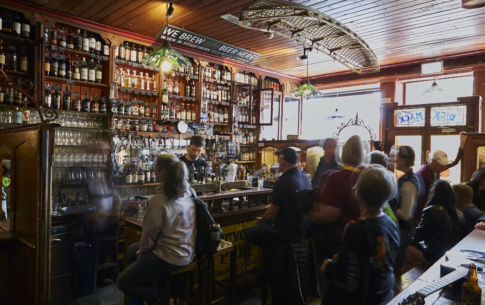
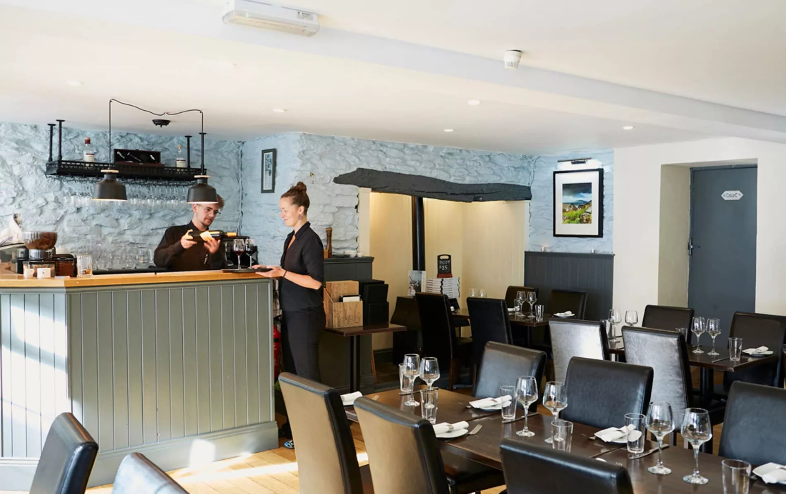
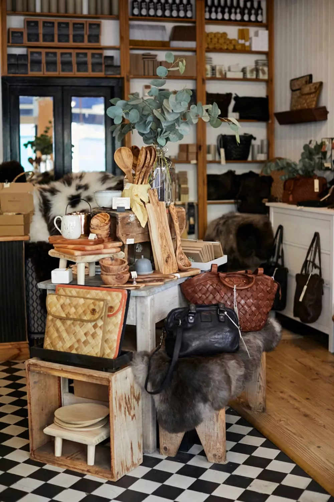

Dingle
Prepárate para que este cabo majestuoso en el tramo de la Ruta Costera del Atlántico del condado de Kerry te robe el corazón
Situado en la costa oeste, entre los pliegues de color verde esmeralda de la montaña de Slievanea y las aguas de color azul mineral del océano Atlántico, Dingle es un lugar que parece salvaje y cálido, lejano y cordial. Su belleza natural y espectacular se presta a ser explorada, pero son los momentos de tranquilidad de la localidad los que suelen permanecer más tiempo en la memoria: charlas con los lugareños sobre el clima cambiante, los pubs tradicionales que se caldean con chimeneas y los platos de productos del mar superfrescos que se sirven en el exterior con el sabor de la brisa marina. «La calidad de vida en Dingle es excelente», comenta Bec Hoban de la tienda de ropa Outwest. «Las cosas son agradables y lentas, ¡la locura y las prisas que se dan en las grandes ciudades no existen aquí! La gente te saluda por la calle y te desea lo mejor».
Dingle a lo largo de los años
La vida humana en la península de Dingle se remonta al período Neolítico, comprendido entre el 4000 a. C. y el 2500 a. C., pero la localidad de Dingle fue un importante centro de comercio durante más de 800 años, y en el siglo XVI se había convertido en un floreciente puerto. Las flotas pesqueras procedentes de Francia y España utilizaban el puerto resguardado como base, desde donde se exportaban pescado y pieles a Europa. En el siglo XVIII surgió la industria del lino, que posteriormente se extinguió, y la ciudad se centró principalmente en la pesca en el siglo XIX. La Gran Hambruna supuso una caída de las fortunas de Dingle, pero en la actualidad, la ciudad prospera gracias al turismo, la pesca y las industrias cervecera y de destilación.
Una península de extravagante belleza
Dingle es una puerta de acceso a paisajes que solo se pueden calificar como impactantes. Diminutas localidades como Dunquin, Ballyferriter y Ballydavid se arremolinan en un litoral que serpentea en torno a calas doradas, acantilados escarpados y ensenadas rocosas azotadas por las olas. Hay exteriores de Star Wars en el Three Sisters Headland, cerámica de porcelana y gres en Louis Mulcahy, y multitud de cervezas locales en el fantástico pub Tig Bhric con chimenea, a las afueras de Ballyferriter. «No dudes en ver todo lo que puedas de la península de Dingle», aconseja Bec Hoban. «Haz un recorrido panorámico en coche por Slea Head a primera hora de la mañana para evitar las aglomeraciones y poder disfrutar de todo. Detente en las playas de Ventry y Coumeenole, y asegúrate de recorrer una de las rutas de senderismo hasta Dunmore Head. Haz una parada en el muelle de Dunquin y no te vayas sin visitar el recién renovado centro de visitantes de la isla Blasket. ¡Es increíble!»
Conexiones con el mar
En la localidad de Dingle hay muchas cosas para mantenerte ocupado durante uno o dos días. Prueba los recorridos en barco por Dingle para disfrutar de un breve recorrido de una hora por el puerto de Dingle. Podrás ver lo que los guías describen como «el único internado femenino de habla irlandesa del mundo», pero también escucharás la historia de Dingle, así como los cuentos del añorado delfín Funghie, que residió mucho tiempo en el puerto de Dingle. Si quieres disfrutar de una actividad más intensa en el mar, reserva una experiencia gastronómica para pescar y cocinar con la Dingle Cookery School, o embárcate en el trepidante y emocionante Dingle Sea Safari. La localidad en sí es un lugar precioso para pasear, con sus edificios de colores brillantes, lugareños cordiales y calles empinadas. «Una de las mejores cosas que puedes hacer en Dingle es tomar un café por la mañana y dar un paseo», comenta Micheál Flannery. Abundan las pequeñas y maravillosas galerías de arte y artesanía, pero no te vayas sin entrar en An Díseart, donde se puede ver un conjunto de vidrieras espectaculares de Harry Clarke a cambio de un pequeño donativo en la capilla.
¿Tiene los mejores pubs del mundo?
Es difícil encontrar un pub malo en Dingle. Y en un día lluvioso, hay pocas cosas más agradables que conseguir un taburete junto al fuego y esperar a que empiece la música. ¿Un buen lugar para empezar? Hazlo por Dick Mack’s que tiene un público joven y animado y suele estar abarrotado, pero en un día tranquilo puedes apreciar realmente la belleza del frontal del bar del siglo XIX con su madera pulida y su larga barra. La cervecería también organiza visitas guiadas con catas de sus últimas cervezas. En la calle principal, Foxy John’s es igual de popular, con música en directo y un ambiente medio pub y medio ferretería. En el pub Curran’s, que data de 1871 y está situado al otro lado de la calle, el ritmo es muy distinto. Sentado aquí disfrutarás del momento, con la luz de la tarde extendiéndose sobre las baldosas mientras los lugareños charlan a tu alrededor.
Más arriba en Main Street, Kennedy's es una pequeña joya de color púrpura brillante que parece la casa de un particular. Está iluminado con velas, es diminuto e increíblemente acogedor: no te sorprendas si sales de allí habiendo charlado con todo el mundo, incluidos los perros, que tienen permitida la entrada. ¿Dispones de más tiempo? Prueba Paddy Bawn’s y McCarthy’s para escuchar música y, si visitas la playa de Inch, pásate por The South Pole Inn, en Annascaul, propiedad del explorador antártico Tom Crean.
Comida
Dingle es una verdadera mezcla de restaurantes clásicos que llevan años sirviendo productos del mar (principalmente pescado) de la vieja escuela, y lugares más nuevos y animados que lo mezclan todo un poco. Uno de los mejores en cuanto a productos del mar frescos es The Fish Box, cofundado por Micheál Flannery, que personifica la filosofía del mar al plato. «Traemos el pescado directamente de nuestro barco, que está a 250 metros de aquí, al restaurante y lo servimos fresco, fresco y fresco todos los días», comenta Micheál. Hiperlocal (con cerveza de Dick Mack’s, pan de la cercana panadería Courtney’s Bakery y verduras de los hermanos O’Connor al final de la calle) e innovador, The Fish Box sirve el clásico «fish and chips» junto a opciones más contemporáneas como tacos de pescado con suero de leche, una caja de especias y un bol de «fishito».
Si quieres degustar alta cocina, prueba Land to Sea y The Chart House, ambos con un Bib Gourmand de Michelin, mientras que en Solas Tapas & Wine, puedes disfrutar de platos para compartir con ostras, gambas y croquetas de patata y algas. Los puristas del café deben dirigirse directamente a los excelentes My Boy Blue y Bean, y no te pierdas Murphy’s para probar el mejor helado de Dingle, o incluso de Irlanda.
De compras
Para ser una localidad pequeña, Dingle ofrece una experiencia de compras ecléctica que abarca de todo, desde instrumentos de música tradicional hasta carteles de viaje irlandeses retro. Crinkle Stores, en Green Street, es un buen lugar para empezar, con preciosas pieles de oveja de razas raras, tablas de madera y tazas hechas a mano por el alfarero local David Holden. También en Green Street, puedes comprar láminas impresas de estilo retro en Tripster, libros en Dingle Bookshop, queso en The Little Cheese Shop (en Grey’s Lane) y preciosas camisetas y sudaderas en Outwest.
Si quieres disfrutar del arte, visita Greenlane Gallery, The Carol Cronin Gallery y Dingle Artworks. The Dingle Woollen Company es el lugar perfecto para comprar un jersey tipo Aran tradicional o unas zapatillas de piel de oveja.
Dónde alojarse
Repleto de hoteles, casas de huéspedes y albergues, Dingle es el tipo de lugar donde encontrar un sitio donde alojarse no es un problema, aunque deberías reservar con mucha antelación en los meses de verano. El Benner’s Hotel es una buena opción si te apetece estar en el centro de la ciudad, con habitaciones cómodas y un acogedor bar delantero, o prueba el Dingle Skellig Hotel situado junto al mar, justo a las afueras de la ciudad. En lo que respecta a las casas de huéspedes, Dingle destaca por la combinación de buenas ubicaciones, cálida hospitalidad y cómodos entornos en Greenmount House, Castlewood House y Heatons. Si buscas un alojamiento económico, prueba el Grapevine Hostel en Dykegate Street.
¿A dónde querés viajar ahora?
Buscá ciudades, consejos o destinos de Irlanda